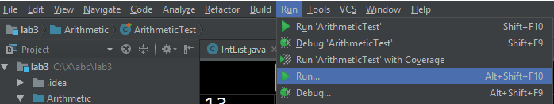
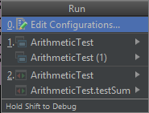
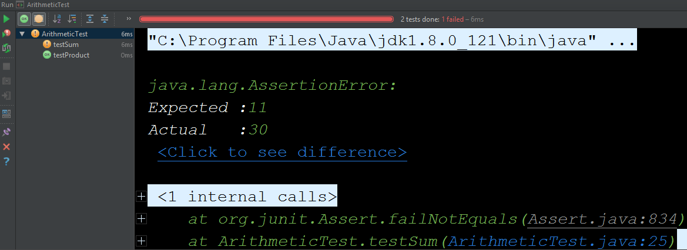
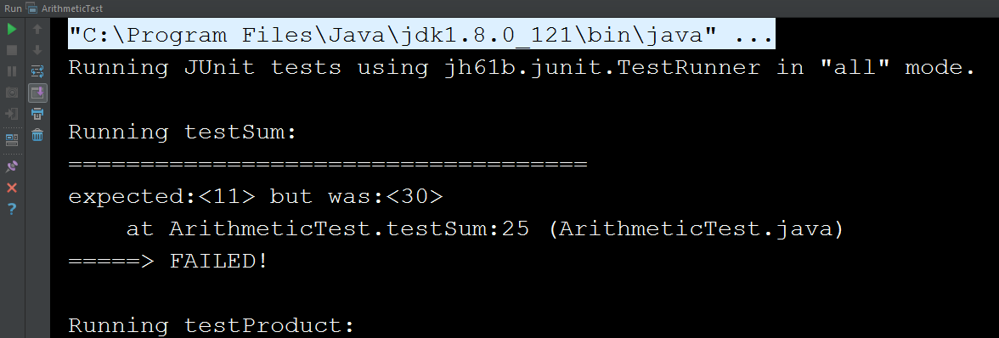

- Pre-lab
- Introduction
- Running JUnit Tests in IntelliJ (or another IDE)
- Intlists
- A Debugging Mystery
- Running the 61B Style Checker
- Deque Unit Tests
- Submission
- Recap
Pre-lab
-
Installing and Using the IntelliJ Plugin: Make sure you’ve had a chance to install and use the CS 61B IntelliJ plugin. Make sure you know how to check style with the plugin.
-
After pulling skeleton, copy your IntList.java from lab2 into the lab3/IntList folder.
-
Make sure you’ve watched the lecture on testing. This lab assumes you have already seen this lecture.
-
Make sure your version of the CS61B Plugin is at least 1.0.21. To do this, go to Settings Plugins. You should see a list of plugins, including CS61B. Click on it, and the version number should show in the right pane.
Introduction
In this lab, you will learn about Unit Testing, JUnit, the 61B style checker, and we’ll also get a bit more debugging experience.
What is JUnit?
JUnit is a Unit Testing Framework for Java.
What is Unit Testing?
Unit Testing is a great way to rigorously test each method of your code and ultimately ensure that you have a working project.
The “Unit” part of Unit Testing comes from the idea that you can break your program down into units, or the smallest testable part of an application. Therefore, Unit Testing enforces good code structure (each method should only do “One Thing”), and allows you to consider all of the edge cases for each method and test for them individually.
In this class, you will be using JUnit to create and run tests on your code to ensure its correctness. And when JUnit tests fail, you will have an excellent starting point for debugging. Furthermore, if you have some terrible bug that is hard to fix, you can use git to revert back to a state when your code was working properly according to the JUnit tests.
JUnit Syntax
JUnit tests are written in Java, similar to what you wrote in Project 1A with
LinkedListDequeTest. However, the JUnit library implements all the boring
stuff like printing error messages, making test writing much simpler.
To see an example JUnit test, navigate to the Arithmetic directory and open
ArithmeticTest.java in your favorite text editor (don’t open IntelliJ just
yet).
The first thing you’ll notice are the imports at the top. These imports are what give you easy access to the JUnit methods and functionality that you’ll need to run JUnit tests. For more information, see the Testing lecture video.
Next, you’ll see that there are two methods in ArithmeticTest.java:
testProduct and testSum. These methods follow this format:
@Test
public void testMethod() {
assertEquals(<expected>, <actual>);
}
assertEquals is a common method used in JUnit tests. It tests whether a
variable’s actual value is equivalent to its expected value.
When you create JUnit test files, you should precede each test method with a
@Test annotation, and can have one or more assertEquals or assertTrue
methods (provided by the JUnit library). ** All tests must be non-static. **
This may seem weird since your tests don’t use instance variables and you
probably won’t instantiate the class. However, this is how the designers of
JUnit decided tests should be written, so we’ll go with it.
From this point forwards in 61B, we will officially be working in IntelliJ. If you want to run your code from the terminal, refer to this supplemental guide. While you’re welcome to do this, the staff will not provide official support for command line compilation and execution.
Running JUnit Tests in IntelliJ (or another IDE)
Open up IntelliJ and import your lab 3 folder that came with the skeleton. Repeat the steps from Lab 2 Setup, Project Setup and don’t forget to import the javalib libraries!
Open up lab3/Arithmetic/ArithmeticTest.java in IntelliJ. Move your cursor to the
main method of ArithmeticTest and click the Run... option under the Run
menu at the top of IntelliJ.

After clicking “Run…”, you should see at least two options that will look something like the list below. The number of items in your list may vary.

The two most important options in your list will be the one that says only “ArithmeticTest” next to the red and green arrows (next to the 2. in the image above), and the one that says only “ArithmeticTest” next to the white and blue boxes (next to the 1. in the image above).
If you use the version with red/green arrows, then IntelliJ will render the results of the tests. If you use the version with the white/blue boxes, the renderer that Josh put together will run instead. Which you prefer is a matter of personal preference. For the rest of the course we will refer to these as the “default renderer” and the “jh61b renderer”, respectively.
For now, run the default renderer, and you should see something like:

This is saying that the test on line 25 of ArithmeticTest.java failed. The test
expected 5 + 6 to be 11, but the Arithmetic class claims 5 + 6 is 30. You’ll
see that even though testSum includes many assert statements, only one
failure is shown.
This is because JUnit tests are short-circuiting – as soon as one of the asserts in a method fails, it will output the failure and move on to the next test.
Try clicking on the ArithmeticTest.java:25 in the window at the bottom of the screen and IntelliJ will take you straight to the failed test. This can come in handy when running your own tests on later projects.
Next, try running the code with the jh61b renderer. It doesn’t look as nice as the default renderer, and doesn’t allow you to click straight to code. In earlier versions of this course, we had students run tests from the command line, which required me to write our own custom renderer. In this new cyber-future where we use IntelliJ, this renderer is no longer necessary. However, you might find that you prefer it.

For those of you who prefer the jh61b renderer, you can modify your JUnit test file so that it only shows the results of failed tests (instead of all tests). To do this, simply change the mode argument from “all” in the main method to “failed”.
If you just want to use the renderer that you already selected, you can bypass having to pick between the two renderers in any of the following four ways:
- Right-click and then selecting ‘Run’.
- Use the top item in the Run menu at the top of the IntelliJ screen.
- Click the green arrow (or debugging symbol) in the top right.
- Use the appropriate keyboard shortcut.
All four of these are equivalent. If you decide you want to switch renderers, you’ll need to use the “Run…” option instead.
Now fix the bug, either by inspecting Arithmetic.java and finding the bug, or using the IntelliJ debugger to step through the code until you reach the bug.
After fixing the bug, rerun the test, and if you’re using the default renderer, you should get a nice glorious green bar. Enjoy the rush.
Intlists
Now a real-CS61B application of JUnit tests: IntLists.
As with last week’s lab, we’re going to take advantage of the ‘of’ method of the IntList class, which makes creating IntLists (and writing IntList tests) much easier. For example, consider:
IntList myList = IntList.of(0, 1, 2, 3);
Which will create the IntList 0 -> 1 -> 2 -> 3 -> null.
Test a Reverse Method
Copy your IntList.java that you created for lab2 into the lab3/IntList folder. In this section, our goal will be to write the reverse method from this week’s discussion worksheet.
We’ll showcase the idea of “test-driven development” for this exercise, where we write a unit test even before we write the new method.
Add a new test to IntListTest.java that tests the .reverse() method, which you
can assume has the following definition:
/**
* Returns the reverse of the given IntList.
* This method is destructive. If given null
* as an input, returns null.
*/
public static IntList reverse(IntList A)
Don’t add a reverse method to IntList yet. We’re going to write a test
BEFORE we write reverse.
Your test should test at least the following three situations:
- That the function returns a reversed list.
- That the function is destructive, i.e. when it is done running, the list
pointed to by A has been tampered with. You can use
assertNotEquals. This is sort of a silly test. - That the method handles a null input properly.
You’ll notice that as you’re typing your code that the IntList.reverse is
highlighted in red, and mousing over should say “Cannot resolve method reverse”
or similar. This is because we haven’t added a reverse method yet. We’ll do this
in the next section. Don’t write reverse yet!
Once you’ve written your test, compare your results to your neighbor in lab and discuss. Make sure you’ve both written tests for at least all three situations above.
If you’re working from the command line instead of IntelliJ (not recommended): Try compiling IntListTest.java, and you should get a compiler error along the lines of:
IntListTest.java:72: error: cannot find symbol
symbol: method reverse
This error is a great thing! It means that the compiler is actually finding our test.
Writing a Reverse Method
Now create a dummy version of the reverse method into IntList.java that simply returns null. Your only goal here is to get IntList.java to compile. Don’t fill in the code for the actual reverse method yet, just make it return null
If you’re running IntListTest from the command line, you’ll want to add a main method before proceeding. See ArithmeticTest.java for an example. Since you should be using IntelliJ, this isn’t necessary unless you want to use the jh61b renderer instead of the default renderer.
Try running the test, and it test should fail. This is great! We’ve now reached the “red” phase of the Test-Driven Development (TDD) cycle described in class.
Write a reverse method, and rerun the tests until it passes. If you’re stuck (this is a tricky problem with a very clever solution), see the week 3 discussion solutions. Note that a correct reverse is not required for full credit on this week’s lab (it’s an ungraded test in the AG), so if you’re really stuck and need to work on project 1A, do that first, and then come back and complete this exercise after you’ve finished project 1A.
Protip: If you want to have your tests timeout after a certain amount of time (to prevent infinite loops), you can declare your test like this:
@Test(timeout = 1000)
The given parameter specifies the maximum time in milliseconds.
Some people find the rush of TDD addictive. You basically set up a little game for yourself to solve. Some people hate it. Your mileage may vary. Whether you personally enjoy the TDD flow or not, writing tests will be one of the most important skills you learn here at Berkeley, and getting “test-infected” will save you and your future colleagues an enormous amount of time and misery.
A Debugging Mystery
Another important skill to learn is how to exhaustively debug. When done properly, debugging should allow you to rapidly narrow down where a bug might be located, even when you are debugging code you don’t fully understand.
Your company, Flik Enterprises, has released a fine software library called Flik.java that is able to determine whether two Integers are the same or not.
You receive an email from someone named “Horrible Steve” who describes a problem they’re having with your library:
"Dear Flik Enterprises,
Your library is very bad. See the attached code. It should print out 500
but actually it's printing out 128.
(attachment: HorribleSteve.java)"
Using any combination of the following techniques, figure out whether the bug is in Horrible Steve’s code or in Flik enterprise’s library:
- Writing JUnit tests for the Flik library.
- Using the IntelliJ debugger, especially conditional breakpoints.
- Using print statements.
- Refactoring Horrible Steve’s code. Refactoring means changing the syntax without changing the functionality. This may be hard to do since HS’s code uses lots of weird stuff.
HorribleSteve.java and Flik.java both use syntax we haven’t covered in class. We do not expect you to fix the bug or even understand why it’s happening once you have found it. Instead, your job is simply to find the bug.
Tip: JUnit provides methods assertTrue(boolean) and assertTrue(String,
boolean) that you might find helpful.
Try to come up with a short explanation of the bug! Check in with your TA to see if your answer is right (not for a grade).
Running the 61B Style Checker
We will be using the CS 61B IntelliJ Plugin to check for style. Try it out on
IntList.java in your IntList folder. You should see that there are at
least two style errors (the two we put in, plus whatever you may have introduced
yourself). Resolve these errors. If you’re ever stuck on style issues, consult
the official 61B style
guide.
When you pass the style check, the output should look like:
Running style checker on 1 file(s)...
Style checker completed with 0 errors
Deque Unit Tests
In project 1B (to be released 2/3), you’ll be required to write JUnit tests for
your Deque classes. If you have extra time in lab, start writing some tests for
LinkedListDeque and ArrayDeque as a warmup.
Submission
As before, submit your code to GitHub and use Gradescope to test your code.
Recap
In this lab, we went over:
- Unit Testing (big picture)
- JUnit syntax and details
- Writing JUnit tests
- Debugging Using JUnit
- Running the Style Checker